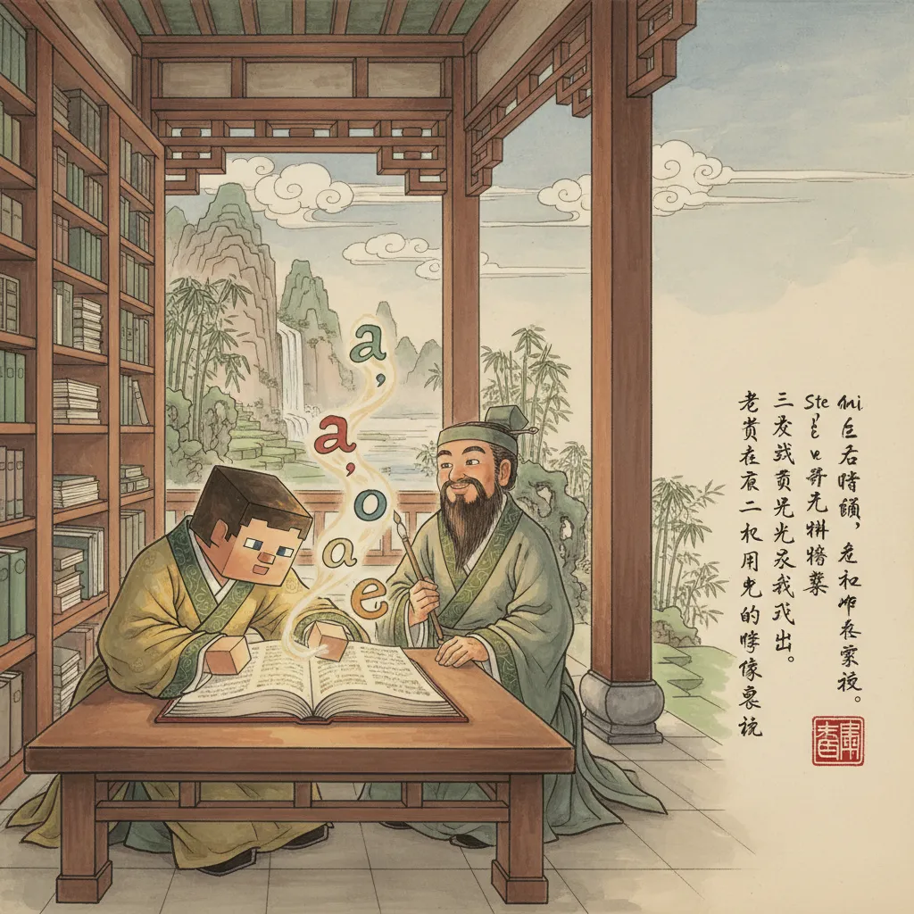
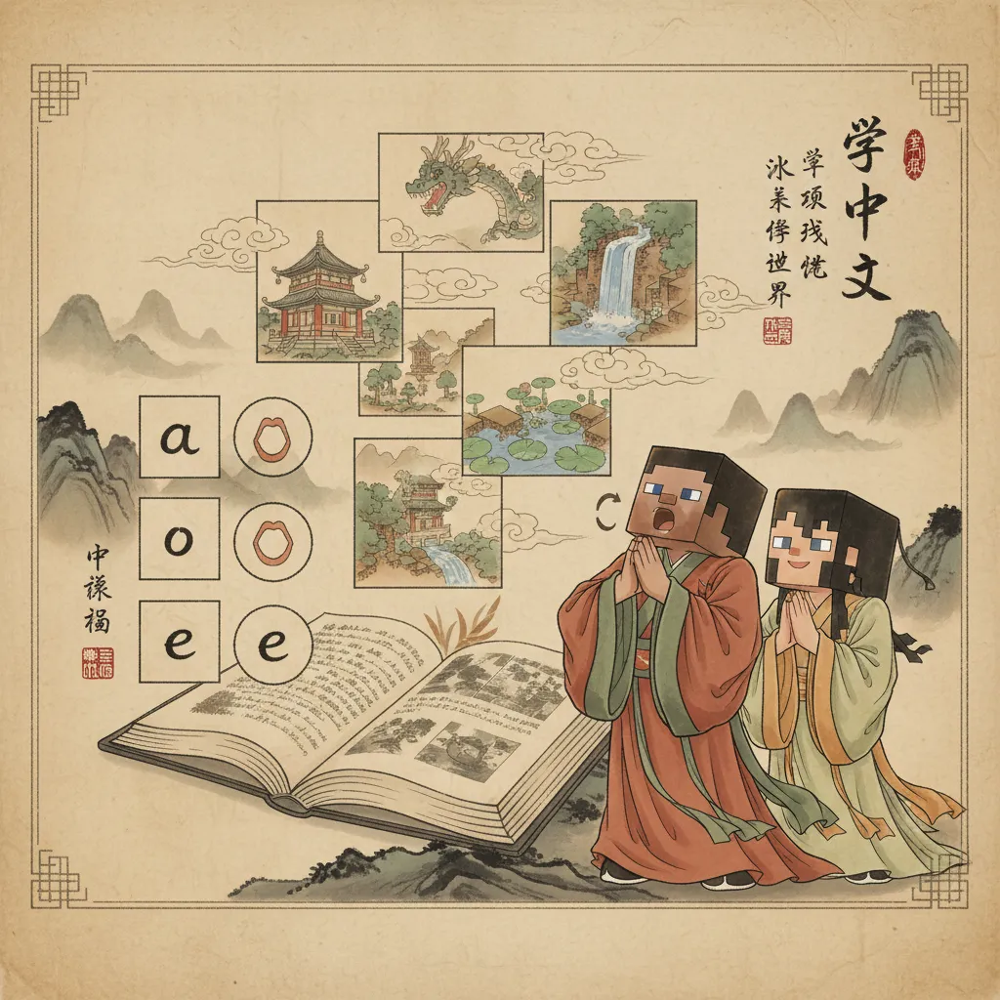
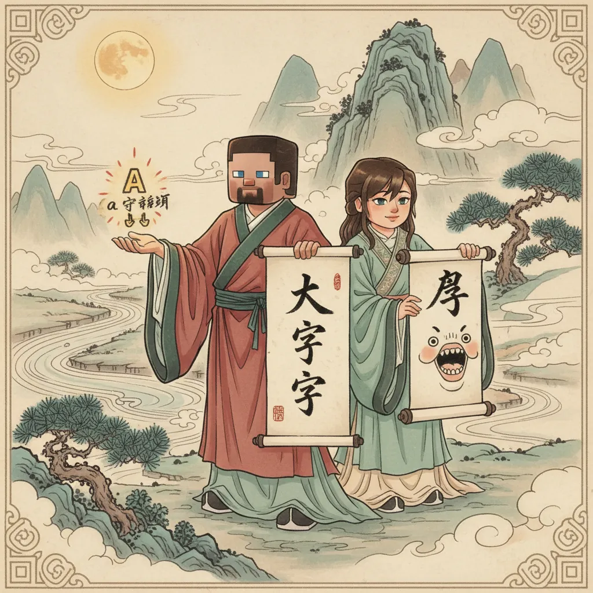
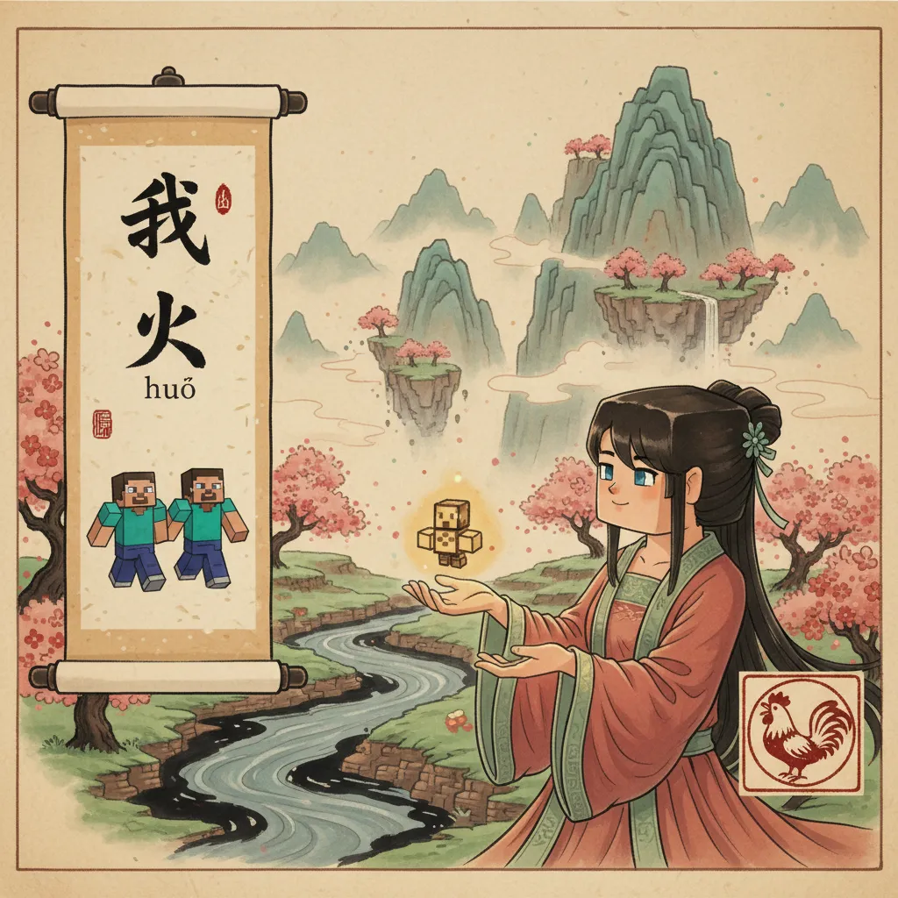
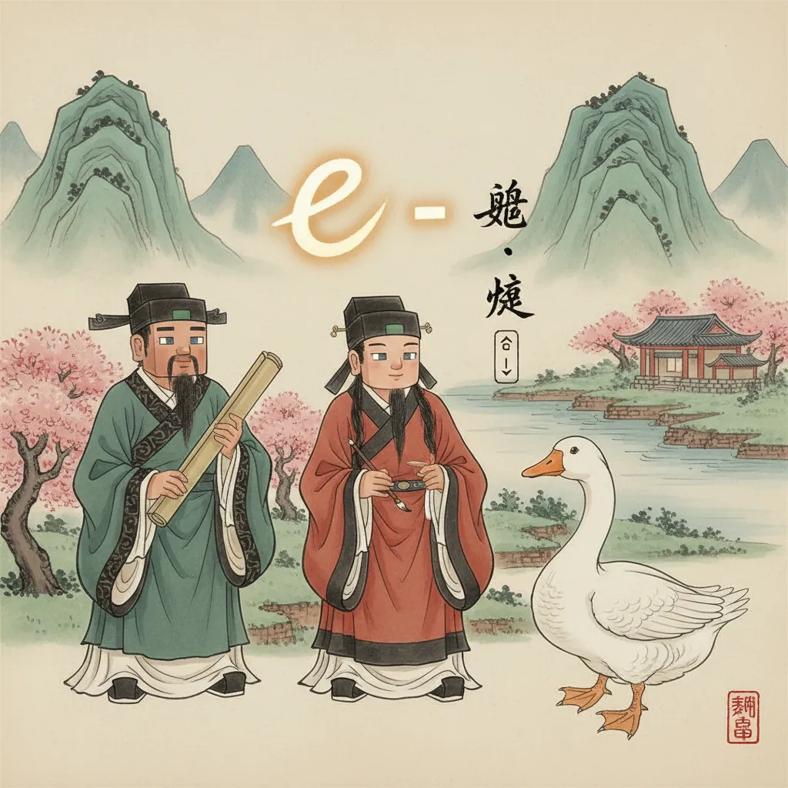
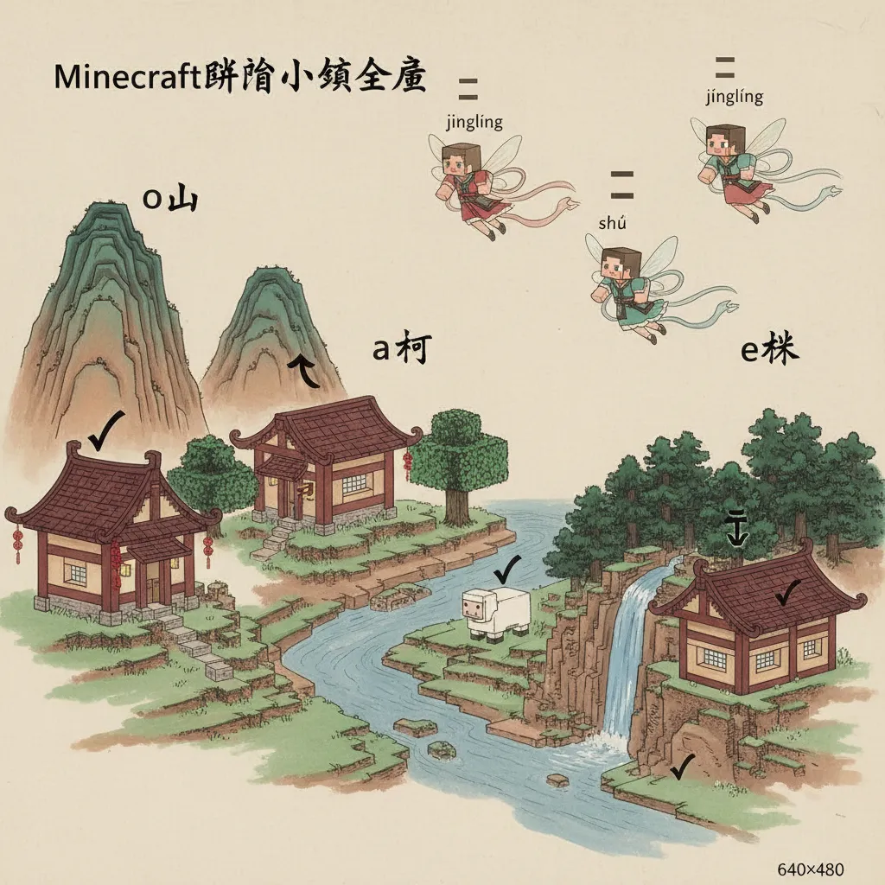
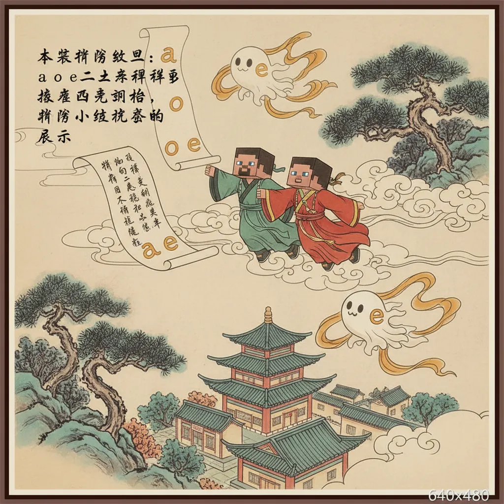

🔤 拼音是什么
🤔 拼音是什么？拼音是用 英文字母 给汉字注音的工具。
每个汉字都有对应的拼音。
比如：妈 → mā

🗣️ 声母 (shēng mǔ) — Initials拼音由 声母 + 韵母 组成。
声母是开头的 辅音 字母。
一共 21个 声母 + 2个特殊声母 y w
韵母是拼音中 声母后面 的部分。
单韵母: a o e i u ü
复韵母: ai ei ui ao ou iu ie üe er
鼻韵母: an en in un ün ang eng ing ong

🎶 声调 (shēng diào) — Tones同一个拼音，不同声调 = 不同意思！
mā 妈 (mom) ≠ mǎ 马 (horse) ✨

🗣️ 拼读练习声母 + 韵母 + 声调 = 拼音！
比如: b + ā = bā (八)

🏆 声调挑战
✍️ 填空练习